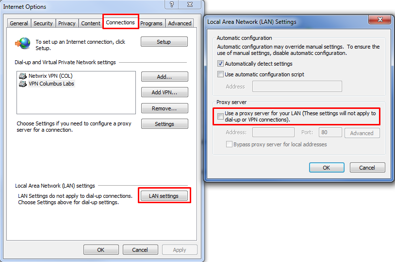
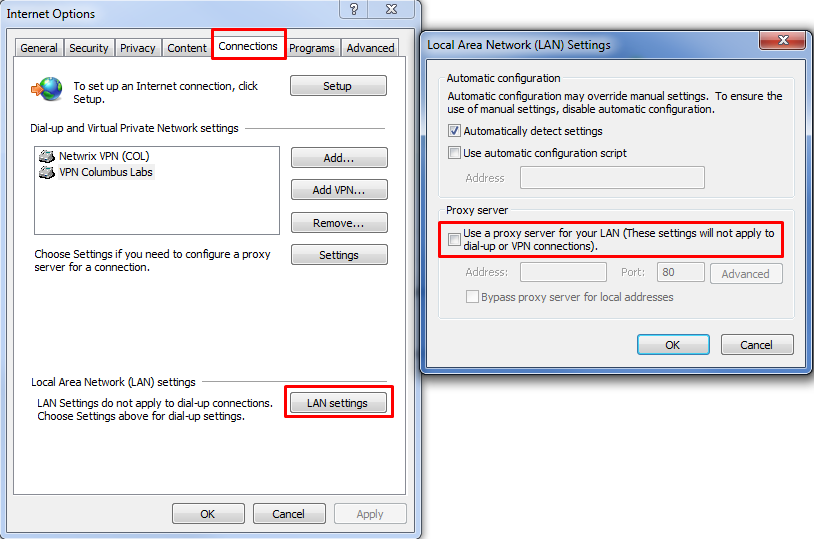

You are getting the following warning message when checking Netwrix Auditor for product
updates: "Error: The remote server returned an error: (407) Proxy authentication required. "
The "Check for Updates" feature uses a direct internet connection and unfortunately is unable to connect to the Netwrix website since a proxy server is in use.
In order to resolve the issue we can recommend the following options:
1. Configure the internet connection to not use the Proxy server.
In the Internet Explorer, open the Internet Options dialog box, click Connections, click LAN Settings, and disable "Use a Proxy Server...". 
2. Disable authentication on the proxy server to allow anonymous connections. In order to do that please perform the following steps:
2.1 For ISS version 6.0
The "Check for Updates" feature uses a direct internet connection and unfortunately is unable to connect to the Netwrix website since a proxy server is in use.
In order to resolve the issue we can recommend the following options:
1. Configure the internet connection to not use the Proxy server.
In the Internet Explorer, open the Internet Options dialog box, click Connections, click LAN Settings, and disable "Use a Proxy Server...". 
2. Disable authentication on the proxy server to allow anonymous connections. In order to do that please perform the following steps:
2.1 For ISS version 6.0
- Click the Windows "Start" button on your proxy server. Click "Administrative Tools" and
then click "Internet Information Services Manager." The IIS utility loads and all of your
websites and proxy server settings are shown.
- Right-click the proxy server name on the left and click "Properties" in the popup menu.
Click the "Directory Security" tab to display several security settings.
- Click the "Edit" button in the section labeled "Authentication and Access Control." A
new window appears that lists several options for access to the proxy server.
- Check the box labeled "Enable Anonymous Access." Click "OK" in the opened window and
then click "OK" again in the main properties window. Anonymous access is set up and no
user name or password is required when connecting to the server.
2.2 For ISS 7.X and above
-Click the Windows "Start" button on your proxy server.
-Click "Administrative Tools" and then click "Internet Information Services Manager." The IIS utility loads and all of your websites and proxy server settings are shown.
-Select the proxy server name on the left, in the main window double-click "Authentication" under the IIS section
-On the next screen enable "Anonymous Authentication". Anonymous access is set up and no user name or password is required when connecting to the server.
3. Check updates on the customer portal, in "My product" section:
- Open and Netwrix website - www.netwrix.com;
- Click Sign in at the top right corner and type your login information;
- Then navigate to "My Products" section.
2.2 For ISS 7.X and above
-Click the Windows "Start" button on your proxy server.
-Click "Administrative Tools" and then click "Internet Information Services Manager." The IIS utility loads and all of your websites and proxy server settings are shown.
-Select the proxy server name on the left, in the main window double-click "Authentication" under the IIS section
-On the next screen enable "Anonymous Authentication". Anonymous access is set up and no user name or password is required when connecting to the server.
3. Check updates on the customer portal, in "My product" section:
- Open and Netwrix website - www.netwrix.com;
- Click Sign in at the top right corner and type your login information;
- Then navigate to "My Products" section.